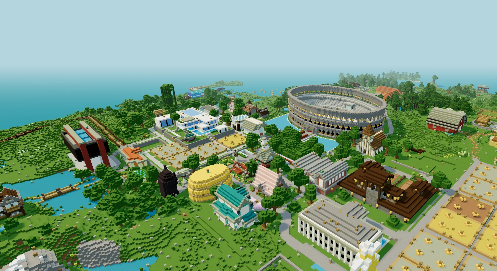
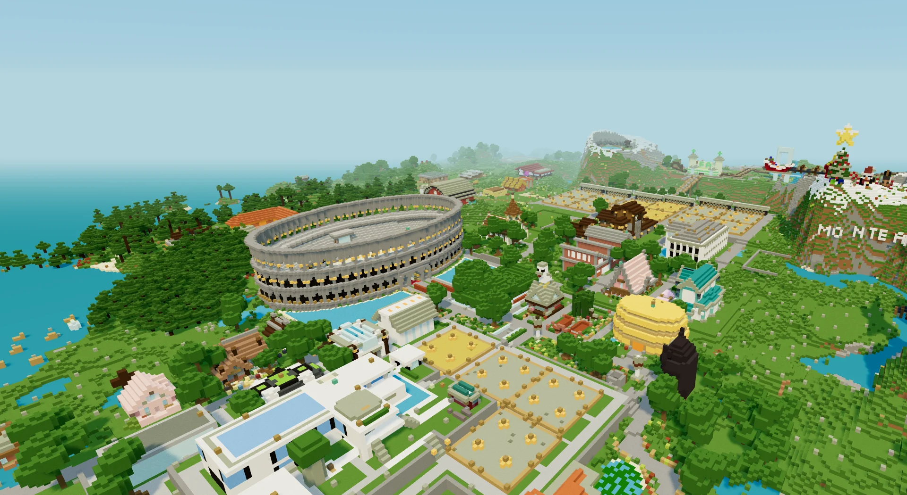

Sua skin.
Com a sua cara.
Crie, edite e experimente em 3D. Depois, leve seu visual para o Minecraft.
Abrir o editor Visuais de demonstração
Encontre onde jogar, crie sua skin e reúna os amigos. Seus mundos, suas criações e suas conversas na mesma plataforma.
Catálogo e Community grátis. Manager incluído nos planos.
Editor, peças e prévia em 3D.
Explore servidores por estilo de jogo, guarde seus favoritos e encontre recomendações para você.
Explorar a plataformaCrie, edite e experimente em 3D. Depois, leve seu visual para o Minecraft.
Abrir o editor Visuais de demonstraçãoNo Community, você publica suas criações, acompanha os amigos e combina a próxima partida. As mensagens acompanham você pelo site.
Conhecer o CommunityO Força Aliada Manager reúne a criação, os arquivos, os backups e o console. Você cuida do seu mundo e publica a página dele na mesma plataforma.
Conhecer o Manager Para Windows · Incluído nos planos Pro e Team.Escolha quando fazer o backup. O Manager cuida da rotina enquanto o computador está ligado.
O Manager para o seu servidor. Mais personalidade para suas páginas e seu perfil. Tudo na mesma conta Força Aliada.
Para seu servidor e uma equipe pequena.
Mais mundos. Mais gente criando junto.
O servidor roda no seu computador, que precisa estar ligado e conectado. Valores e condições confirmados na contratação.
É uma plataforma com ferramentas para criar servidores e conectar comunidades. Hoje, você encontra o Manager, o catálogo Minecraft com servidores e skins, e o Community. O servidor próprio é parte dessa história — a Força Aliada vai além dele.
Não. Você pode explorar o catálogo, usar skins e ferramentas, criar uma página básica de servidor e participar do Community sem assinatura. Pro e Team incluem o Manager e benefícios adicionais. Cada servidor pode ter suas próprias regras de entrada.
Não. O Manager roda no seu PC Windows, que precisa ficar ligado e conectado à internet. Ele reúne a administração, oferece um endereço público protegido e permite acesso ao console pelo navegador. O desempenho depende do computador, da conexão e da configuração do servidor.
Sim. A conta Força Aliada acompanha você no Manager, no Community e no catálogo. A conta Microsoft pode ser conectada para recursos do Minecraft, como importar e aplicar sua skin Java. Ela não é substituída pela conta Força Aliada.
Os dois incluem o aplicativo, o console e os benefícios pessoais. Pro permite até 2 servidores e 3 pessoas na equipe; Team, até 5 servidores e 10 pessoas. Confira a comparação e as condições dos planos.